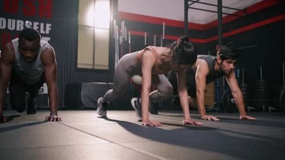

Articole recente

Beneficiile antrenamentelor HIIT
Descoperă cum antrenamentele de intensitate ridicată pot să te ajute să arzi mai multe calorii într-un timp scurt...
Citește mai multCum să te alimentezi corect după antrenament
Recuperarea după antrenament este esențială. Află ce alimente sunt cele mai potrivite pentru a accelera refacerea...
Citește mai mult
Cum să îți menții motivația în fitness
Motivația poate scădea pe parcursul călătoriei tale în fitness. Iată câteva sfaturi care te vor ajuta să rămâi pe drumul cel bun...
Citește mai mult